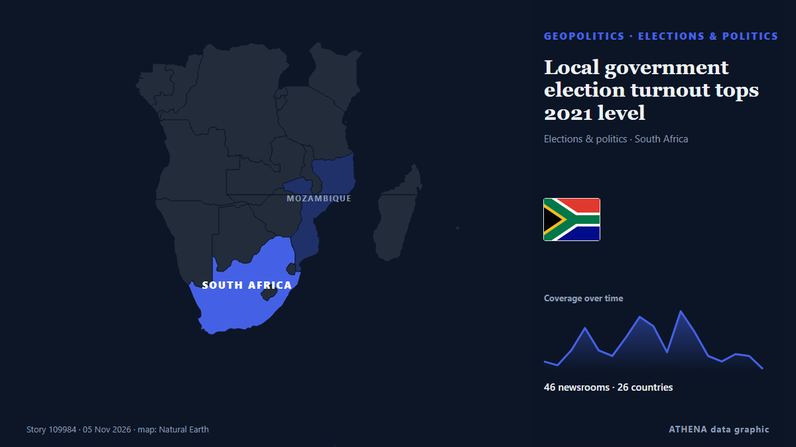

Local government election turnout tops 2021 level

Special voting gets underway on Monday and will continue on Tuesday. von SABC News
Unabhängig gemeldet von 47 Medien in 26 Ländern seit dem 1. Nov., zuerst von City A.M.; die Berichterstattung flaut ab. ATHENA stuft das Risiko als mäßig ein (3.5/10), vor allem wegen der Schwere des beschriebenen Schadens und seiner geografischen und sektoralen Reichweite. Die Konfidenz liegt bei 91 % (hoch): 47 Medien bestätigen es unabhängig, bei einer mittleren Verlässlichkeit der Quellen von 74 %. Medien nach Land: Südafrika (26), Vereinigtes Königreich (2), Mosambik (2). Berichterstattung: 1. Nov. bis 2. Nov., 22 Stunden.
Warum es wichtig ist: Sicherheits- und diplomatische Entwicklungen können Bündnisse, Handel und Märkte weit über die direkt beteiligten Länder hinaus verschieben.
Was sich geändert hat: 22 neue Berichte von 14 Redaktionen in den 24 Stunden bis 5. Nov..
Erste Schlagzeile: LOCAL ELECTIONS 2026: What happens after the vote? Councils, coalitions and (maybe) controversies
Schlagzeilen werden auf Englisch angezeigt, wie veröffentlicht.
Auf einen Blick
Ausgewählt, bewertet und geschrieben nach der veröffentlichten Methodik von ATHENA. Kein Redakteur greift in einzelne Ereignisse ein. So entsteht ATHENA ›
| 01 Nov 13:05 UTC | 5 |
|---|---|
| 01 Nov 19:05 UTC | 3 |
| 02 Nov 01:05 UTC | 11 |
| 02 Nov 07:05 UTC | 23 |
| 02 Nov 13:05 UTC | 12 |
| 02 Nov 19:05 UTC | 8 |
| 03 Nov 01:05 UTC | 18 |
| 03 Nov 07:05 UTC | 29 |
| 03 Nov 13:05 UTC | 24 |
| 03 Nov 19:05 UTC | 10 |
| 04 Nov 01:05 UTC | 32 |
| 04 Nov 07:05 UTC | 22 |
| 04 Nov 13:05 UTC | 8 |
| 04 Nov 19:05 UTC | 5 |
| 05 Nov 01:05 UTC | 9 |
| 05 Nov 07:05 UTC | 9 |
| 05 Nov 13:05 UTC | 1 |
| 05 Nov 19:05 UTC | 2 |
| 03 Nov 11:00 UTC | 5.0 |
|---|---|
| 03 Nov 11:12 UTC | 4.2 |
| 05 Nov 22:06 UTC | 3.5 |
Warum diese Zahlen
Bedeutung
Risiko
Konfidenz
Die Berichterstattung – wer berichtete, und wann
Schlagzeile wie veröffentlicht · öffnet das Original- City A.M. · Vereinigtes KönigreichTreasury minister: ‘I don’t think employers are working people’
- SABC News · SüdafrikaGP legislature calls for higher police presence ahead of LGE
- Evening Standard (London) · Vereinigtes KönigreichTreasury minister sparks fury after suggesting employers not ‘working people’
- The Hindu · IndienSporadic clashes, rigging allegations mark urban local body polls in Kurnool, Nandyal and Anantapur districts
- The Jerusalem Post · IsraelForeign interference suspicions don’t undermine election's integrity, CEC chief Sohlberg says
- SABC News · SüdafrikaNATJOINTS on high alert ahead of local government elections
- Daily Maverick · SüdafrikaLOCAL ELECTIONS 2026: What happens after the vote? Councils, coalitions and (maybe) controversies
- Novinite · BulgarienThe Bulgarian community in London has been actively voting since the morning
- IOL · Südafrika20 political-linked murders, 139 election crime cases recorded as South Africa heads to polls
- Premium Times · NigeriaEDITORIAL: 2027: Voting candidates of popular choice, not by threats
- Club of Mozambique · MosambikMozambique: 490 citizens deported from South Africa for illegal stay
- eNCA · SüdafrikaNatJOINTS says security measures in place for safe elections
- SABC News · SüdafrikaExtensive security measures vital to ensure peaceful polls: Analyst
- IOL · SüdafrikaAI must serve South Africans, not leave them behind
- IOL · Südafrika‘You march, you commit a crime’: Police issue stern warning ahead of local government elections
- eNCA · SüdafrikaPensioners vote as they lament water woes
- IOL · SüdafrikaNATJOINTS warns protests on 4 November election day will be criminal
- IOL · SüdafrikaElection 2026: Police warn protesters to end marches by midnight on Tuesday
- SABC News · SüdafrikaMeasures in place to ensure free and fair polls in KZN: Premier Ntuli
- The Straits Times · SingapurSouth Africa's splintering vote sets up multi-party battle for cities
- eNCA · SüdafrikaEkurhuleni pensioners endure 51 days of water woes as they cast special votes
- IOL · SüdafrikaDurban Chamber at 170: what it told Ramaphosa about the Durban's deteriorating port
- IOL · SüdafrikaNATJOINTS warning: Protests on election day will be a criminal offence
- IOL · Südafrika546 parties, 137,000 candidates and a troubled local government system: Ramaphosa warns of corruption
- IOL · SüdafrikaYOUTH VOICES: My vote on 4 November is a vote for economic change
- eNCA · SüdafrikaReporter Diaries | Special voting under way in Knysna
- IOL · SüdafrikaYOUTH VOICES: I can’t vote on 4 November, but my voice still counts
- IOL · SüdafrikaKZN 2026 Elections: Premier Ntuli confident as Special Votes begin
- eNCA · SüdafrikaElections 2026 | Police urged to focus on hotspots
- AllAfrica · AFRSouth Africa: Soldiers On Standby As Police Prepare for Election Violence
- AllAfrica · AFRSouth Africa: Record 2.6 Million Get Early Shot At Local Polls
- AllAfrica · AFRSouth Africa: R548-Billion Investment Plan Promises More Than 60,000 Jobs
- IOL · SüdafrikaYOUTH VOICES: Why I am voting on 4 November: services, jobs and growth
- Club of Mozambique · MosambikSouth Africa’s splintering vote sets up multi-party battle for cities
- AllAfrica · AFRSouth Africa: Rigging Claims, Xenophobia Raise Fears of Polling Station Tensions
- eNCA · SüdafrikaElections 2026 | President Ramaphosa calls for peaceful polls
- IOL · SüdafrikaYOUTH VOICES: Why I am voting: a South Africa where disability does not decide opportunity
- IOL · SüdafrikaPolice monitor anti-foreigner tensions and election disinformation ahead of Wednesday’s vote
- IOL · SüdafrikaYOUTH VOICES: Is my vote the key to a better future for South Africa's youth?
- ProPublica · Vereinigte StaatenVoting Experts Feared “Chaos” on Election Day. So Far, It Hasn’t Materialized.